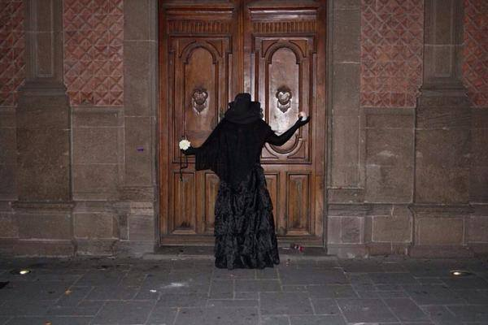

La dama enlutada es una leyenda urbana de principios del siglo XIX muy conocida de la ciudad de Guadalajara, capital de Jalisco.
Al parecer, la historia fue transmitida por los serenos, quienes vigilaban las calles durante las noches
mientras los habitantes de la ciudad permanecían en sus hogares.
Cuenta esta leyenda que, al casi caer la medianoche, algunas personas fueron testigo de cómo un espectro femenino
salió de la Catedral y puso rumbo hacia el norte de la ciudad.
La mujer vestía de negro y, cuando llegó frente al Santuario de Nuestra Señora de Guadalupe, atravesaba la calle y después desaparecía.
Esa noche, la enlutada cosechó varias muertes. Aquellos que la persiguieron fueron sus víctimas cuando escuchaban su tenebroso grito.